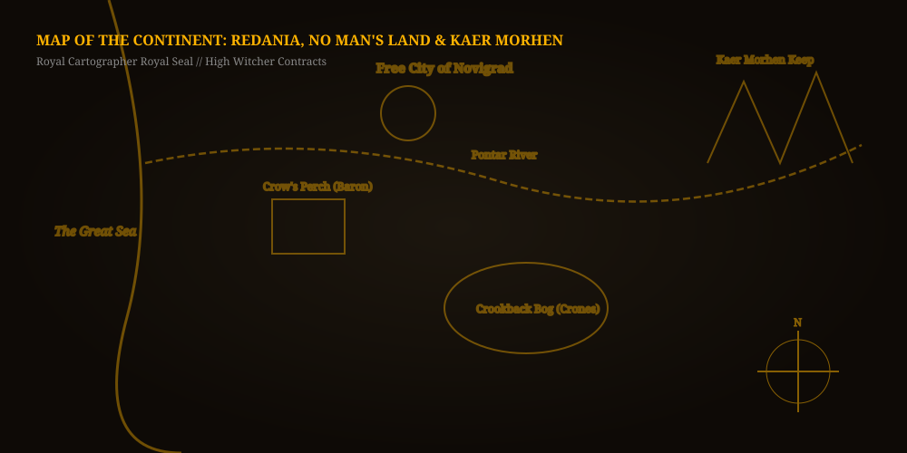

The Witcher 3: Wild Hunt
1. Walkthrough & Quest Progression Main Scenario: The Search for Ciri
- The Beast of White Orchard (Prologue Contract) Gather Buckthorn herb from the riverbed to brew the Gryphon lure. Consult with herbalist Tomira, set an ambush with Vesemir in the open fields, and utilize the Aard sign and Grapeshot bombs to ground the winged Royal Griffin.
-
Investigate the Bloody Baron's Estate in Velen
Arrive at Crow's Perch. Use Witcher Senses to examine bedroom clues, uncover Princess the goat's whereabouts, and make the critical moral choice between transforming the Botchling or slaying it.
→ [ Reveal Classified Data: Botchling vs. Lubberkin Branch Consequences ] DECISION SPOILER
Choice 1 (Transform into Lubberkin): Pacify the creature with the Axii sign twice during the procession. Leads to peaceful ancestral burial; Lubberkin guides Geralt straight to Tamara's fisherman safehouse without violent wraith combat.
Choice 2 (Slay Botchling): Must battle the enraged cursed creature + 6 specters. Collect blood for ritual; more combat intensive.
Recommended Path: RITUAL TRANSFORMATION (LUBBERKIN) -
Navigate the Crookback Bog & the Crones
Descend into the murky swamplands. Assist Johnny the Godling to retrieve his lost voice, solve the Whispering Hillock tree spirit dilemma, and decipher the cryptic riddles of the three Crones of Crookback Bog.
→ [ Reveal Classified Data: Whispering Hillock & Anna's Fate ] MAJOR PLOT FORK
Freeing the Tree Spirit: Saves the orphans of Crookback Bog, but the Crones curse Anna into a water hag and the Baron commits suicide.
Destroying the Heart: The orphans are taken by the Crones, but Anna's mind is saved and the Baron journeys into the Blue Mountains to seek healing.
Tragic Equilibrium: NO MORAL PERFECTION IN VELEN - Novigrad Underworld & Dandelion's Rescue Infiltrate the criminal hierarchy of Novigrad. Track down Sigismund Dijkstra and the King of Beggars, stage a theatrical play with Priscilla to draw out Doppler allies, and breach the Temple Guard convoy to liberate Dandelion.
-
The Battle of Kaer Morhen & Wild Hunt Incursion
Gather your assembled allies at the ancient Witcher stronghold. Seal the three elemental rifts using Dimeritium bombs, cast protective Quen shields, and duel the Wild Hunt commander Imlerith by dodging behind his heavy shield bash.
→ [ Reveal Classified Data: Imlerith Second Phase Counter Tactics ] BOSS COMBAT SPOILER
Second Phase Teleport Sequence: When Imlerith drops his massive shield, do not roll away immediately. Wait for the audio cue of the spectral teleport, dodge diagonally forward through his swing, and punish with Igni + Fast Silver Sword strikes.
Fatal Opening: TELEPORT RECOVERY COOLDOWN (1.5 SECONDS)
2. Gameplay, Snapshots & Continent Map Vistas & Strategic Reconnaissance
Demonstrates active Quen shield parries, Igni fire bursts against feathered wings, and optimal silver sword oil rotations.
Interactive Northern Realms Strategic Map
Hover over pulsing waypoints across Velen, Novigrad, and Kaer Morhen to view contract locations.

3. Character Models & Faction Files Monster Slayer & Spectral Invader
Geralt of Rivia (The White Wolf)
Master Witcher of the School of the Wolf. Mutated through the Trial of the Grasses to possess superhuman reflex speeds, cat-like night vision, and resistance to toxins.
Eredin Bréacc Glas
Ruthless elven general commanding the spectral Red Riders. Seeks to capture Ciri to harness her Elder Blood lineage and transport his dying civilization across dimensions.
4. System Calibration Logs Target Rig & Acoustic Optimization
Hardware Calibration: RTX 3050 (6GB Mobile) / Core i7-13620H STABLE 60 FPS NEXT-GEN UPDATE
Optimized settings for The Witcher 3: Wild Hunt Complete Edition (DirectX 12) balancing fidelity with high frametime stability in crowded Novigrad streets.
| Parameter | Recommended Setting | Performance Justification & Impact |
|---|---|---|
| Ray Tracing (RTGI & RT Shadows) | DISABLED (OFF) | RT on the 6GB 3050 mobile causes severe VRAM thrashing and drops frames into single digits. Turning it OFF guarantees solid 60 FPS. |
| NVIDIA HairWorks | GERALT ONLY // AA 2X | Keeps realistic strands on the White Wolf while eliminating catastrophic tessellation hits when encountering wolf packs. |
| DLSS Super Resolution | QUALITY (1080p Target) | Renders at 720p with superior anti-aliasing; completely stabilizes frame drops inside dense vegetation in Crookback Bog. |
| Texture Memory Budget & Foliage Visibility | HIGH // HIGH (NOT ULTRA+) | Ultra+ exceeds the 6GB VRAM buffer in Novigrad, causing stuttering when riding Roach at sprint speeds. |
| Shadow Quality & Water Quality | MEDIUM // HIGH | Minimal visual downgrade from Ultra; frees up valuable rasterization performance for dense swamps. |
Acoustic Calibration: boAt Rockerz (FxSound / Sound Blaster EQ) SLAVIC FOLK & COMBAT EQ
Tuned to highlight Percival's acoustic folk instruments, deep equine galloping rhythms, and directional monster grunts.
| Frequency Band | Gain Offset | Acoustic Role in The Witcher 3 |
|---|---|---|
| 125 Hz (Roach Gallop & Heavy Signs) | +3.5 dB | Gives visceral, grounded weight to Roach's hooves on cobblestone and the concussive burst of the Aard sign. |
| 1 kHz - 2.5 kHz (Slavic Vocals & Lute) | +3.0 dB | Brings forward vocal harmonies in combat themes ("Silver for Monsters") and keeps dialogue clear during windy storms. |
| 4 kHz - 6 kHz (Silver Blade Clashes) | +1.5 dB | Accentuates sharp metallic ringing on successful sword parries against human bandits and armored Wild Hunt knights. |
| 8 kHz - 12 kHz (Wind & Foliage) | -2.5 dB | Dampens high-frequency harsh sibilance during high-gale forest storms ("Wind's howling"). |
| Spatial Surround / Bass Boost | SURROUND 50% // BASS +2 | Provides directional orientation for drowners surfacing from swamp water behind Geralt. |